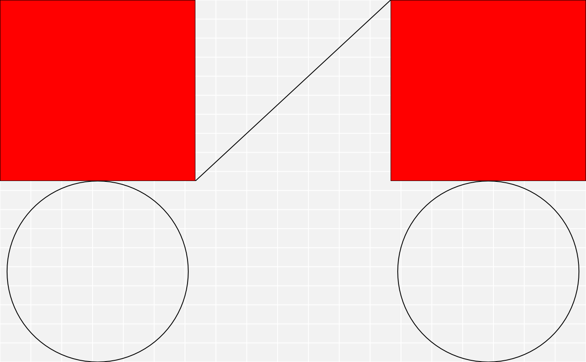
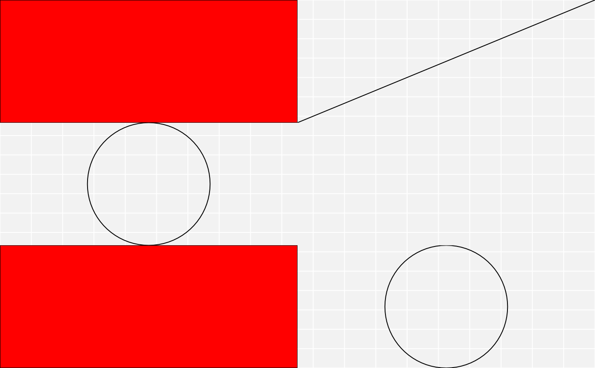

These functions are the parallels of the matrix/data.frame row and
column bindings. As such they work in the same way, except they have to take
care of additional attributes within the gtables. Most importantly it needs
to take care of the sizing of the final gtable, as the different gtables
going in may have different widths or heights. By default it tries to
calculate the maximum width/height among the supplied gtables, but other
options exists. Further, the relative layering of the grobs in each gtable
can be modified or left as-is.
Arguments
- ...
gtables to combine (
xandy)- size
How should the widths (for rbind) and the heights (for cbind) be combined across the gtables: take values from
first, orlastgtable, or compute theminormaxvalues. Defaults tomax.- z
A numeric vector indicating the relative z values of each gtable. The z values of each object in the resulting gtable will be modified to fit this order. If
NULL, then the z values of obects within each gtable will not be modified.
Examples
library(grid)
a <- rectGrob(gp = gpar(fill = "red"))
b <- circleGrob()
c <- linesGrob()
row <- matrix(list(a, b), nrow = 1)
col <- matrix(list(a, b), ncol = 1)
mat <- matrix(list(a, b, c, nullGrob()), nrow = 2)
row_gt <- gtable_matrix("demo", row, unit(c(1, 1), "null"), unit(1, "null"))
col_gt <- gtable_matrix("demo", col, unit(1, "null"), unit(c(1, 1), "null"))
mat_gt <- gtable_matrix("demo", mat, unit(c(1, 1), "null"), unit(c(1, 1), "null"))
# cbind
c_binded <- cbind(mat_gt, col_gt, size = "first")
plot(c_binded)

# rbind
r_binded <- rbind(mat_gt, row_gt, size = "last")
plot(r_binded)

# Dimensions must match along bind direction
try(cbind(mat_gt, row_gt))
#> Error in cbind_gtable(x, y, size = size) :
#> `x` and `y` must have the same number of rows